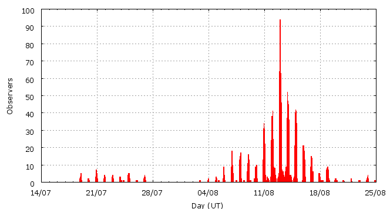

Activity profile
Activity profileThis page shows automated results of the Perseids 2007, based on visual data entered through the IMO electronic report form. Send your feedback regarding this page to Geert Barentsen or visit the project pages. Note that automated results are not suitable for scientific use!
Page generated on 14 August 2008 at 21:28 UT.
ZHRmax = 93 based on 28263 Perseids in 3399 data intervals, assuming fixed population index r = 2.0 and zenith correction 1/sin(hR).

| Time (UT) | Solarlon | nINT | nPER | ZHR | |
|---|---|---|---|---|---|
| 2007-07-18 22:55 | 115.840 | 13 | 22 | 4 | +-1 |
| 2007-07-19 22:16 | 116.769 | 5 | 7 | 6 | +-2 |
| 2007-07-20 23:00 | 117.753 | 30 | 28 | 4 | +-1 |
| 2007-07-21 23:13 | 118.716 | 15 | 25 | 5 | +-1 |
| 2007-07-22 23:12 | 119.670 | 12 | 30 | 5 | +-1 |
| 2007-07-23 22:34 | 120.599 | 12 | 53 | 13 | +-2 |
| 2007-07-24 07:46 | 120.965 | 1 | 1 | 5 | +-4 |
| 2007-07-24 23:52 | 121.606 | 28 | 72 | 7 | +-1 |
| 2007-07-25 23:33 | 122.548 | 4 | 20 | 11 | +-2 |
| 2007-07-26 23:59 | 123.521 | 12 | 72 | 12 | +-1 |
| 2007-08-02 21:38 | 130.117 | 2 | 5 | 7 | +-3 |
| 2007-08-03 22:32 | 131.110 | 1 | 4 | 8 | +-4 |
| 2007-08-04 22:43 | 132.075 | 7 | 46 | 16 | +-2 |
| 2007-08-05 06:15 | 132.375 | 3 | 7 | 9 | +-3 |
| 2007-08-05 22:21 | 133.018 | 24 | 131 | 13 | +-1 |
| 2007-08-06 01:30 | 133.143 | 1 | 1 | 5 | +-4 |
| 2007-08-06 22:35 | 133.984 | 54 | 226 | 10 | +-1 |
| 2007-08-07 01:35 | 134.104 | 3 | 10 | 15 | +-5 |
| 2007-08-07 10:33 | 134.462 | 1 | 3 | 4 | +-2 |
| 2007-08-07 23:32 | 134.981 | 53 | 283 | 13 | +-1 |
| 2007-08-08 02:10 | 135.086 | 2 | 7 | 15 | +-5 |
| 2007-08-08 10:34 | 135.421 | 1 | 10 | 14 | +-4 |
| 2007-08-08 23:07 | 135.923 | 69 | 321 | 19 | +-1 |
| 2007-08-09 02:08 | 136.043 | 15 | 94 | 22 | +-2 |
| 2007-08-09 07:08 | 136.243 | 2 | 7 | 11 | +-4 |
| 2007-08-09 20:20 | 136.771 | 16 | 64 | 16 | +-2 |
| 2007-08-10 00:20 | 136.930 | 30 | 191 | 19 | +-1 |
| 2007-08-10 22:37 | 137.821 | 126 | 1008 | 26 | +-1 |
| 2007-08-11 01:29 | 137.936 | 65 | 540 | 25 | +-1 |
| 2007-08-11 10:28 | 138.295 | 19 | 131 | 23 | +-2 |
| 2007-08-11 13:45 | 138.426 | 6 | 28 | 20 | +-4 |
| 2007-08-11 22:09 | 138.762 | 135 | 785 | 33 | +-1 |
| 2007-08-12 00:39 | 138.862 | 92 | 1008 | 41 | +-1 |
| 2007-08-12 02:31 | 138.937 | 91 | 703 | 41 | +-2 |
| 2007-08-12 08:52 | 139.191 | 46 | 446 | 36 | +-2 |
| 2007-08-12 15:31 | 139.457 | 6 | 88 | 71 | +-8 |
| 2007-08-12 20:48 | 139.668 | 167 | 1000 | 82 | +-3 |
| 2007-08-12 21:53 | 139.711 | 159 | 1003 | 76 | +-2 |
| 2007-08-12 22:45 | 139.746 | 128 | 1429 | 93 | +-2 |
| 2007-08-12 23:29 | 139.776 | 150 | 1679 | 70 | +-2 |
| 2007-08-13 00:12 | 139.804 | 139 | 1615 | 75 | +-2 |
| 2007-08-13 00:58 | 139.835 | 113 | 1451 | 84 | +-2 |
| 2007-08-13 01:48 | 139.868 | 117 | 1005 | 81 | +-3 |
| 2007-08-13 02:29 | 139.896 | 129 | 1004 | 91 | +-3 |
| 2007-08-13 04:30 | 139.976 | 75 | 482 | 56 | +-3 |
| 2007-08-13 09:37 | 140.181 | 35 | 315 | 69 | +-4 |
| 2007-08-13 16:40 | 140.463 | 35 | 488 | 81 | +-4 |
| 2007-08-13 20:28 | 140.615 | 96 | 1017 | 70 | +-2 |
| 2007-08-13 21:50 | 140.670 | 122 | 1017 | 58 | +-2 |
| 2007-08-13 23:17 | 140.728 | 98 | 1007 | 58 | +-2 |
| 2007-08-14 00:14 | 140.766 | 94 | 1005 | 54 | +-2 |
| 2007-08-14 01:13 | 140.805 | 83 | 1013 | 53 | +-2 |
| 2007-08-14 03:38 | 140.902 | 51 | 446 | 51 | +-2 |
| 2007-08-14 09:07 | 141.121 | 15 | 118 | 30 | +-3 |
| 2007-08-14 20:25 | 141.573 | 81 | 650 | 31 | +-1 |
| 2007-08-14 22:33 | 141.659 | 109 | 1008 | 25 | +-1 |
| 2007-08-15 00:20 | 141.730 | 94 | 1009 | 29 | +-1 |
| 2007-08-15 01:33 | 141.779 | 25 | 238 | 24 | +-2 |
| 2007-08-15 21:48 | 142.590 | 76 | 701 | 20 | +-1 |
| 2007-08-16 01:10 | 142.725 | 34 | 373 | 17 | +-1 |
| 2007-08-16 21:46 | 143.550 | 52 | 211 | 10 | +-1 |
| 2007-08-17 02:07 | 143.724 | 32 | 156 | 21 | +-2 |
| 2007-08-17 21:47 | 144.512 | 10 | 52 | 9 | +-1 |
| 2007-08-18 03:25 | 144.738 | 3 | 12 | 6 | +-2 |
| 2007-08-18 07:25 | 144.898 | 2 | 10 | 10 | +-3 |
| 2007-08-18 22:14 | 145.492 | 31 | 141 | 9 | +-1 |
| 2007-08-19 01:43 | 145.631 | 9 | 34 | 8 | +-1 |
| 2007-08-19 22:35 | 146.468 | 8 | 44 | 8 | +-1 |
| 2007-08-20 02:27 | 146.623 | 1 | 5 | 5 | +-2 |
| 2007-08-20 21:20 | 147.380 | 3 | 8 | 9 | +-3 |
| 2007-08-21 21:18 | 148.342 | 4 | 11 | 9 | +-3 |
| 2007-08-22 21:38 | 149.318 | 4 | 7 | 5 | +-2 |
| 2007-08-23 22:41 | 150.324 | 11 | 19 | 3 | +-1 |
| 2007-08-24 21:16 | 151.231 | 2 | 3 | 7 | +-4 |
For each estimation interval: time is the middle of the interval, nINT is the number of observing periods and nPER is the number of Perseids involved. ZHR = (1 + sum nPER) / sum(Teff/C) where Teff is the effective observing time and C is the total correction for limiting magnitude, clouds and zenith correction. The solar longitudes refer to equinox J2000.0.
ZHRmax = 95 based on 20504 Perseids in 2166 data intervals, assuming fixed population index r = 2.0 and zenith correction 1/sin(hR).

| Time (UT) | Solarlon | nINT | nPER | ZHR | |
|---|---|---|---|---|---|
| 2007-08-12 07:01 | 139.117 | 14 | 119 | 33 | +-3 |
| 2007-08-12 08:32 | 139.177 | 18 | 165 | 32 | +-2 |
| 2007-08-12 10:20 | 139.249 | 12 | 126 | 44 | +-4 |
| 2007-08-12 11:19 | 139.289 | 5 | 64 | 43 | +-5 |
| 2007-08-12 16:34 | 139.499 | 8 | 104 | 92 | +-9 |
| 2007-08-12 17:50 | 139.549 | 3 | 44 | 81 | +-12 |
| 2007-08-12 19:56 | 139.633 | 21 | 90 | 62 | +-6 |
| 2007-08-12 20:55 | 139.673 | 81 | 551 | 91 | +-4 |
| 2007-08-12 21:28 | 139.695 | 115 | 550 | 72 | +-3 |
| 2007-08-12 21:59 | 139.715 | 88 | 553 | 79 | +-3 |
| 2007-08-12 22:25 | 139.733 | 48 | 550 | 92 | +-4 |
| 2007-08-12 22:42 | 139.744 | 47 | 552 | 92 | +-4 |
| 2007-08-12 22:59 | 139.756 | 52 | 550 | 90 | +-4 |
| 2007-08-12 23:15 | 139.766 | 41 | 554 | 71 | +-3 |
| 2007-08-12 23:28 | 139.775 | 57 | 551 | 70 | +-3 |
| 2007-08-12 23:45 | 139.786 | 50 | 560 | 70 | +-3 |
| 2007-08-12 23:58 | 139.795 | 52 | 559 | 78 | +-3 |
| 2007-08-13 00:16 | 139.807 | 60 | 559 | 66 | +-3 |
| 2007-08-13 00:34 | 139.819 | 33 | 574 | 82 | +-3 |
| 2007-08-13 00:48 | 139.828 | 52 | 554 | 78 | +-3 |
| 2007-08-13 01:08 | 139.842 | 37 | 550 | 95 | +-4 |
| 2007-08-13 01:26 | 139.853 | 46 | 566 | 81 | +-3 |
| 2007-08-13 01:51 | 139.870 | 68 | 550 | 84 | +-4 |
| 2007-08-13 02:13 | 139.885 | 65 | 553 | 94 | +-4 |
| 2007-08-13 02:36 | 139.900 | 80 | 555 | 87 | +-4 |
| 2007-08-13 03:14 | 139.926 | 45 | 305 | 57 | +-3 |
| 2007-08-13 05:04 | 139.998 | 16 | 101 | 74 | +-7 |
| 2007-08-13 06:52 | 140.071 | 14 | 88 | 51 | +-5 |
| 2007-08-13 08:14 | 140.126 | 16 | 113 | 68 | +-6 |
| 2007-08-13 09:59 | 140.195 | 14 | 142 | 73 | +-6 |
| 2007-08-13 11:03 | 140.238 | 8 | 73 | 59 | +-7 |
| 2007-08-13 15:59 | 140.436 | 13 | 165 | 79 | +-6 |
| 2007-08-13 17:17 | 140.488 | 16 | 224 | 89 | +-6 |
| 2007-08-13 19:14 | 140.565 | 19 | 224 | 66 | +-4 |
| 2007-08-13 20:29 | 140.616 | 56 | 550 | 66 | +-3 |
| 2007-08-13 21:18 | 140.648 | 61 | 555 | 65 | +-3 |
| 2007-08-13 21:52 | 140.671 | 62 | 554 | 59 | +-3 |
| 2007-08-13 22:41 | 140.704 | 57 | 550 | 56 | +-2 |
| 2007-08-13 23:26 | 140.734 | 49 | 550 | 60 | +-3 |
| 2007-08-13 23:54 | 140.752 | 52 | 559 | 66 | +-3 |
| 2007-08-14 00:23 | 140.772 | 55 | 552 | 47 | +-2 |
| 2007-08-14 00:58 | 140.795 | 48 | 563 | 53 | +-2 |
| 2007-08-14 01:33 | 140.818 | 43 | 555 | 55 | +-2 |
| 2007-08-14 02:09 | 140.843 | 17 | 185 | 59 | +-4 |
| 2007-08-14 04:20 | 140.930 | 16 | 96 | 34 | +-3 |
| 2007-08-14 05:33 | 140.979 | 10 | 63 | 49 | +-6 |
| 2007-08-14 07:06 | 141.041 | 6 | 31 | 35 | +-6 |
| 2007-08-14 08:17 | 141.088 | 4 | 23 | 15 | +-3 |
| 2007-08-14 10:35 | 141.180 | 7 | 75 | 45 | +-5 |
| 2007-08-14 16:53 | 141.432 | 5 | 57 | 79 | +-10 |
| 2007-08-14 19:12 | 141.525 | 4 | 23 | 45 | +-9 |
| 2007-08-14 20:35 | 141.580 | 58 | 471 | 30 | +-1 |
| 2007-08-14 21:50 | 141.630 | 67 | 551 | 25 | +-1 |
| 2007-08-14 23:05 | 141.681 | 56 | 556 | 26 | +-1 |
| 2007-08-14 23:59 | 141.716 | 52 | 554 | 30 | +-1 |
| 2007-08-15 00:52 | 141.752 | 53 | 560 | 26 | +-1 |
| 2007-08-15 01:44 | 141.786 | 14 | 133 | 26 | +-2 |
For each estimation interval: time is the middle of the interval, nINT is the number of observing periods and nPER is the number of Perseids involved. ZHR = (1 + sum nPER) / sum(Teff/C) where Teff is the effective observing time and C is the total correction for limiting magnitude, clouds and zenith correction. The solar longitudes refer to equinox J2000.0.
Data has been received from 239 observers in 35 countries. Thank you for your efforts!

| Observer | Country | Teff | nPER |
|---|---|---|---|
| Ioan Adam | Romania | 2.78h | 79 |
| Tomasz Adam | Poland | 6.00h | 53 |
| Salvador Aguirre | Mexico | 14.15h | 48 |
| Ahmad Alhudban | Jordan | 1.00h | 36 |
| Jose Alvarellos | unknown | 0.98h | 17 |
| Karl Antier | France | 3.32h | 172 |
| Aleksandar Atevik | Macedonia | 2.05h | 97 |
| Pierre Bader | Germany | 11.74h | 193 |
| Petra Rendtel | Germany | 3.16h | 126 |
| Ricardas Balciunas | Lithuania | 4.74h | 109 |
| Ana Bankovic | Serbia | 12.19h | 348 |
| Angelina Barbonelova | Bulgaria | 11.00h | 278 |
| Geert Barentsen | Belgium | 5.59h | 134 |
| Casper Bedert | Belgium | 6.72h | 150 |
| Stefan Berisa | Serbia | 7.98h | 184 |
| Felix Bettonvil | Netherlands | 2.12h | 86 |
| Jean-marie Biets | Belgium | 32.00h | 347 |
| Martin Blazek | Czech Republic | 1.70h | 39 |
| Lukas Bolz | Germany | 4.93h | 188 |
| Andreas Buchmann | Switzerland | 2.05h | 65 |
| Alexandr Burday | Ukraine | 1.50h | 38 |
| Bill Burton | unknown | 3.20h | 130 |
| Vladimir Burgic | Serbia | 2.00h | 74 |
| Marianne Busschots | Belgium | 1.93h | 24 |
| Milos Cabala | Slovakia | 2.72h | 21 |
| Vasko Cacanoski | Macedonia | 1.87h | 104 |
| Andrijana Cerovic | Serbia | 12.84h | 209 |
| Anja Cervek | Slovenia | 8.83h | 337 |
| Jakub Cerny | Czech Republic | 14.44h | 464 |
| Miroslava Chavdarova | Bulgaria | 2.00h | 85 |
| Marcin Chwala | Poland | 31.40h | 316 |
| Anna Ciechanowska | Poland | 11.25h | 48 |
| Lorenzo Comolli | Italy | 4.57h | 102 |
| Mark Cook | United Kingdom | 3.00h | 9 |
| Tibor Csorgei | Slovakia | 4.65h | 139 |
| Nadka Dankova | Bulgaria | 1.19h | 3 |
| Kristof Debruyn | Belgium | 3.81h | 85 |
| Olivier De Deken | Belgium | 1.28h | 46 |
| Peter Detterline | United States | 4.79h | 70 |
| Karel Dewaele | Belgium | 10.43h | 290 |
| Aleksandra Dimitrievska | Serbia | 16.35h | 427 |
| Veselina Dimitrova | Bulgaria | 2.74h | 94 |
| Irena Divisova | Czech Republic | 24.43h | 113 |
| Dariusz Dorosz | Poland | 25.25h | 258 |
| Audrius Dubietis | Lithuania | 33.97h | 241 |
| Jaroslaw Dygos | Poland | 11.00h | 172 |
| Frank Enzlein | Germany | 7.19h | 236 |
| Yuwei Fan | China | 2.00h | 31 |
| Saeid Fazeli | Iran | 1.41h | 33 |
| Ladislav Fekete | Slovakia | 10.16h | 187 |
| Gunther Fleerackers | Belgium | 7.42h | 104 |
| Ondrej Fremunt | Czech Republic | 5.08h | 125 |
| Martin Fuchs | Czech Republic | 3.08h | 91 |
| Minko Gechev | Bulgaria | 0.74h | 18 |
| Arnold Gentz | Romania | 5.43h | 64 |
| Ivanka Getsova | Bulgaria | 18.41h | 132 |
| Viktor Getsov | Bulgaria | 3.00h | 31 |
| Candido Gomez Benitez | Spain | 3.31h | 61 |
| Zohre Gordan | Iran | 1.41h | 58 |
| Mitja Govedic | Slovenia | 29.75h | 651 |
| Lew Gramer | United States | 5.20h | 140 |
| Pavol Habuda | Slovakia | 18.76h | 323 |
| Shy Halatzi | Israel | 0.93h | 44 |
| Wayne T. Hally | United States | 21.14h | 175 |
| Barbara Handzlik | Poland | 14.90h | 127 |
| Torsten Hansen | Germany | 2.01h | 88 |
| Amir Hassanzadeh | Iran | 1.00h | 22 |
| Roberto Haver | Italy | 3.24h | 104 |
| Kim Hay | Canada | 3.40h | 44 |
| Vilem Heblik | Czech Republic | 15.65h | 330 |
| Krzysztof Helminiak | Poland | 2.00h | 28 |
| Carl Hergenrother | United States | 1.41h | 20 |
| Kamil Hornoch | Czech Republic | 6.15h | 37 |
| Yandong Hu | China | 3.83h | 75 |
| Andrey Igoshev | Russia | 6.67h | 127 |
| Lars Jacobs | Belgium | 5.65h | 111 |
| Michal Jakubec | Czech Republic | 2.97h | 85 |
| Khatere Jalili | Iran | 1.41h | 31 |
| Arno Janssens | Belgium | 0.30h | 2 |
| Cedric Janssen | Belgium | 1.98h | 23 |
| Jens Janssens | Belgium | 4.45h | 84 |
| Visnja Jankov | Serbia | 15.89h | 378 |
| Wout Janssens | Belgium | 4.56h | 100 |
| Jia Wei Ma Jia Wei Ma | China | 0.41h | 16 |
| Helena Jindrova | Czech Republic | 4.31h | 86 |
| Zuzana Jindrova | Czech Republic | 1.17h | 32 |
| Carl Johannink | Netherlands | 11.69h | 325 |
| Jean-luc Jonson Frick | Sweden | 2.90h | 51 |
| Bogdan Jugureanu | Romania | 1.83h | 44 |
| Javor Kac | Slovenia | 13.08h | 497 |
| Reyhane Kameli | Iran | 1.41h | 53 |
| Jakub Kapus | Slovakia | 1.15h | 16 |
| Manos Kardasis | Greece | 1.00h | 26 |
| Siavash - Amir Karimi - Tavakoli | Iran | 1.41h | 97 |
| Siavash Karimi | Iran | 1.41h | 105 |
| Roy Keeris | Netherlands | 2.84h | 36 |
| Anna Kiedrzynek | Poland | 20.60h | 112 |
| Andre Knofel | Germany | 4.06h | 141 |
| Jakub Koukal | Czech Republic | 82.39h | 1094 |
| Dovile Krauleidiene | Lithuania | 1.53h | 11 |
| Richard Kramer | United States | 0.64h | 19 |
| Petr Kubanek | Czech Republic | 2.43h | 63 |
| Marco Langbroek | Netherlands | 2.28h | 90 |
| Marcin Lelit | Poland | 12.38h | 86 |
| Anna Lemiecha | Poland | 6.83h | 23 |
| Jan Lembregts | Belgium | 1.22h | 14 |
| Mariusz Lemiecha | Poland | 15.45h | 150 |
| Beata Lesniak | Poland | 14.58h | 151 |
| Peter Van Leuteren | Netherlands | 10.66h | 125 |
| Anna S. Levina | Israel | 20.74h | 607 |
| Kirill Levanjuk | Ukraine | 0.67h | 7 |
| Mike Linnolt | United States | 1.00h | 3 |
| Robert Lunsford | United States | 7.18h | 165 |
| Pablo Luque Guillén | Spain | 5.10h | 73 |
| Hartwig Luthen | Germany | 2.30h | 122 |
| Mehran Mahmoudi | Iran | 1.41h | 43 |
| Eliska Majorova | Czech Republic | 1.57h | 29 |
| Eliska Majorova | Czech Republic | 3.42h | 92 |
| Jindriska Majorova | Czech Republic | 3.14h | 80 |
| Milan Major | Czech Republic | 3.26h | 64 |
| Grigoris Maravelias | Greece | 2.22h | 28 |
| Ivana Marjanovic | Serbia | 7.20h | 204 |
| Milos Maric | Serbia | 17.55h | 328 |
| Monika Martiniskova | Slovakia | 7.99h | 117 |
| Peter Martinisko | Slovakia | 6.91h | 62 |
| Stefan Markovic | Serbia | 3.65h | 42 |
| Stefan Martinka | Slovakia | 7.36h | 71 |
| Navid Matinmoghaddam | Iran | 0.04h | 70 |
| Kamila Mazur | Poland | 29.23h | 174 |
| Bruce Mccurdy | Canada | 2.00h | 31 |
| Ivo Micek | Czech Republic | 2.37h | 37 |
| Kamila Micuchova | Slovakia | 5.49h | 110 |
| Alexandra Mikuskova | Slovakia | 9.35h | 251 |
| Koen Miskotte | Netherlands | 18.44h | 499 |
| Nilofar Mobini | Iran | 1.41h | 58 |
| Mandana Moghiman | Iran | 1.41h | 152 |
| Sirko Molau | Germany | 13.52h | 427 |
| Nasrin Mostafavi Pak | Iran | 1.98h | 84 |
| Sven Nather | Germany | 11.10h | 205 |
| Martin Nedved | Czech Republic | 1.83h | 30 |
| Zhang Nianfeng | China | 2.15h | 73 |
| Mohammad Nilforoushan | Iran | 2.51h | 129 |
| Markku Nissinen | Finland | 4.46h | 44 |
| Janka Novosadova | Slovakia | 5.13h | 146 |
| Lukas Novak | Czech Republic | 2.26h | 63 |
| Francisco Ocana Gonzalez | Spain | 3.85h | 139 |
| Natalija Odanovic | Serbia | 13.25h | 244 |
| Ingo Ortmann | Germany | 0.42h | 14 |
| Aleksandra Palagacheva | Bulgaria | 2.00h | 145 |
| Jaroslav Pastorek | Slovakia | 0.98h | 23 |
| Jaroslav Pastorek | Slovakia | 2.92h | 7 |
| Jaroslav Pastorek | Slovakia | 2.50h | 39 |
| Jaroslav Pastorek | Slovakia | 2.66h | 41 |
| Jaroslav Pastorek | Slovakia | 5.43h | 200 |
| Jaroslav Pastorek | Slovakia | 1.57h | 38 |
| Jaroslav Pastorek | Slovakia | 2.44h | 36 |
| Dusan Pavlovic | Serbia | 3.33h | 36 |
| Lovro Pavletic | Croatia | 8.76h | 117 |
| Tajana Peter | Slovenia | 2.61h | 118 |
| Carles Pineda Ferre | Spain | 8.84h | 168 |
| Rostislav Plesshivtesev | Spain | 3.25h | 33 |
| Krzysztof Polakowski | Poland | 13.80h | 180 |
| Robert Pomohaci | Romania | 5.24h | 80 |
| Milos Popovic | Serbia | 7.08h | 105 |
| Sergio Radaelli Heras | Venezuela | 1.95h | 45 |
| Mohamad Razavinia | Iran | 1.41h | 33 |
| José Afonso Reis Martins | Portugal | 1.20h | 19 |
| Jurgen Rendtel | Germany | 18.17h | 352 |
| Branislav Savic | Serbia | 14.97h | 462 |
| Teodora Savic Popovic | Serbia | 6.20h | 124 |
| Alex Scholten | unknown | 5.88h | 45 |
| Nathan Schulpen | Belgium | 4.60h | 213 |
| Dave Shave-wall | United Kingdom | 0.17h | 105 |
| Tadeusz Sobczak | Poland | 32.16h | 194 |
| Izabela Spaleniak | Poland | 0.53h | 4 |
| Ulrich Sperberg | Germany | 3.25h | 86 |
| Jiri Srba | Czech Republic | 2.33h | 28 |
| Marko Stankovic | Serbia | 4.42h | 60 |
| Sergey Stariy | Ukraine | 0.68h | 10 |
| Sergey Stariy | Ukraine | 0.45h | 6 |
| Sergey Stariy | Ukraine | 0.50h | 11 |
| Octaaf Steen | Belgium | 7.22h | 74 |
| Octaaf Steen | Belgium | 2.13h | 2 |
| Tomas Stec | Slovakia | 10.96h | 263 |
| Calders Stijn | Belgium | 1.72h | 10 |
| Dana Stoica | Romania | 0.86h | 29 |
| Martin Stojanovski | Macedonia | 3.62h | 162 |
| Wesley Stone | United States | 6.77h | 403 |
| Lenka Studnicna | Slovakia | 19.88h | 450 |
| Oana Suciu | Romania | 1.00h | 3 |
| Jiri Svoboda | Czech Republic | 3.72h | 103 |
| Marta Szpyt | Poland | 0.50h | 5 |
| Petr Taborsky | Czech Republic | 3.21h | 70 |
| Richard Taibi | United States | 6.16h | 97 |
| Darren Talbot | Canada | 2.52h | 13 |
| Iman Talebian | Iran | 1.41h | 43 |
| Cristina Tinta | Romania | 5.41h | 124 |
| Masayuki Toda | Japan | 1.34h | 29 |
| Ruxandra Toma | Romania | 3.01h | 28 |
| Georgi Tonev | Bulgaria | 3.05h | 54 |
| Rafael Ruben Torregrosa Soler | Spain | 3.27h | 24 |
| Josep Trigo Rodriguez | Spain | 4.70h | 46 |
| Blanca Troughton Luque | Spain | 7.73h | 108 |
| Martin Tsarev | Bulgaria | 2.00h | 135 |
| Arnold Tukkers | Slovenia | 1.25h | 12 |
| Shigeo Uchiyama | Japan | 8.28h | 221 |
| Lubos Ulicny | Slovakia | 12.32h | 157 |
| Simona Vaduvescu | Romania | 5.00h | 73 |
| Geertrui Vandist | Belgium | 2.33h | 33 |
| Hendrik Vandenbruaene | Belgium | 5.68h | 163 |
| Michel Vandeputte | Belgium | 58.49h | 935 |
| Michel Vandeputte | Belgium | 1.00h | 97 |
| Romeo Van Snick | Belgium | 1.90h | 31 |
| Sicco Van Hoegee | Netherlands | 8.17h | 14 |
| Jan Verfl | Czech Republic | 3.52h | 89 |
| Ivo Vespalec | Slovakia | 1.96h | 32 |
| Miroslav Vetrik | Slovakia | 7.87h | 88 |
| Myriam Vingerhoets | Belgium | 13.60h | 163 |
| Niels Vranckx | Belgium | 3.47h | 105 |
| Andreas Waets | Belgium | 4.85h | 256 |
| Thomas Weiland | Austria | 30.39h | 442 |
| Stanley Winford | Canada | 2.67h | 67 |
| Mariusz Wisniewski | Poland | 1.93h | 45 |
| Laura Wittemans | Belgium | 4.92h | 152 |
| Lukasz Wozniak | Poland | 18.54h | 197 |
| Hao Wu | China | 3.79h | 92 |
| Jiangping Wu | China | 4.75h | 124 |
| Jiaqing Yang | China | 1.30h | 23 |
| Xinchen Ye | China | 3.63h | 137 |
| Penko Yordanov | Bulgaria | 1.59h | 28 |
| Ilkka Yrjola | Finland | 3.29h | 53 |
| Ewa Zegler | Poland | 1.00h | 13 |
| Chi Zhang | China | 3.31h | 89 |
| Wen Zhou | China | 1.81h | 9 |
| Wen Zhou | China | 6.42h | 61 |
| Jin Zhu | China | 0.90h | 21 |
| Su Zou | China | 1.00h | 20 |
Create your own analysis!
Rate intervals: per2007_rate.csv (CSV-format).
Magnitude distributions: per2007_magn.csv (CSV-format).